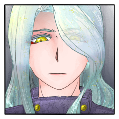

メインフェイズ第二サイクル第四シーン
シーンプレイヤー：藻
GM
藻および潺への感情を持つため、焔郎、灰吏、双方の乱入が可能になります。
藻
焔というには甘く、夕日というには冷たい瞳が紺碧の夜に水の香を辿る。
藻
滝壺の清浄な気配に紛れる獣と水の入り混じったにおい。
藻
苔むした地面を、骨の高下駄は滑ることなく踏みしめる。
御祀 潺
踏み入れた何者かの気配を察するのにも適していた。
御祀 潺
「このようなお時間に、如何されましたか？」
御祀 潺
立ち上がった服から、髪から。
水がしたたり落ちる。
藻
水の中にまでじゃぶじゃぶと入っていき、浅瀬に座り込む。
藻
ここの滝壺からは山の下が見下ろせる。
丹念に世話のされた里山。
藻
本家と分家。そこに隔てられたもの。
隔てられてなお同じく流れるもの。
藻
古き神の血が、ひとびとに祀られるごとに水の神域を必要としたから。
いつか流れる歴史のなかで結びついた。
藻
潺がこの清めの運命をどこで担ったのか。
今どんな気持ちでいるのか。
藻
「せせらぎが取り寄せてくれたチョコレート、おいしかった」
藻
「なかに、ヘーゼルナッツのクリームが入っててね」
藻
「囲炉裏で炙って、チョコレートと一緒に……クッキーにはさんで」
藻
家の人にもわけてあげたかったけど遠慮されちゃった。
御祀 潺
20に満たないこの少女に、手も届かない。
御祀 潺
「セクシーな大人には遠いかもしれませんね。」
御祀 潺
当時は、藻の家にたいそう気を使ったそうだ。
藻
古き神代の血。
それこそ、この国がこの国になる前からの。
古き神の血。
藻
もしかしたら、今人の世に跋扈する妖魔だって。
ほんとうは。
藻
おいそれと名前を出すことすらかなわぬ、歴史の裏の神。
藻
藻と御祀が保ち、祈り、清め続けた沈黙の神域を今生きる神の子。
御祀 潺
この身に宿る程度の繋がりでは、留める必要さえなかった。
藻
海。山。街。
屋台。花火。お船。
絵画。彫刻。音楽。
藻
骨の下駄が、苔むした地面を打ち鳴らす。
清浄な空気を切り裂いて。駆けた。
御祀 潺
流れる水が弾けて、周囲に霧が立ち込める。
GM
メインフェイズの戦闘であるため、戦闘参加者の人数がラウンド上限となります。
GM
プロットを。隠したダイスの出目を変更し、ディスコード秘話にてGMに伝えてください。
[ 御祀 潺 ] がダイスシンボルを公開。出目は 5 です。
[ 藻 ] がダイスシンボルを公開。出目は 6 です。
GM
◆ラウンド１
プロット６：藻 プロット５：潺
藻
■ 奥義
《静・歌鎖塞加之静寂》
(しずかうたぐさりふさぐのみならずしじま)
指定特技 ：第六感
エフェクト：クリティカルヒット/断ち/回数制限
GM
奥義情報が潺に渡り、感情共有で灰吏にも渡ります。
演出を、続けてどうぞ。
藻
人が獣を狩り、肉を清流にすすぎ、焔で炙り。
口にした瞬間に途切れる言葉を司る沈黙の神。
藻
太古。
人が生きてきた。
それをただ指し示す、人のための神。
GM
藻は5D6を。
クリティカルヒットによるダメージ喪失分野の決定ダイスです。
藻
5d6 (5D6) ＞
12[1,2,2,2,5] ＞ 12
[ 御祀 潺 ] 器術 : 1 → 0
[ 御祀 潺 ] 体術 : 1 → 0
[ 御祀 潺 ] 忍術 : 1 → 0
[ 御祀 潺 ] 謀術 : 1 → 0
[ 御祀 潺 ] 戦術 : 1 → 0
GM
……RPをしていただいてから、戦果の宣言をお願いしましょうか。
御祀 潺
倒れた男の手足は投げ出され、まだ角の鋭い上流の石が肌を切り裂いた。
御祀 潺
川となり、海へ至り、雨となって降り注ぐ。
御祀 潺
天地を巡り、生命に恵みを与えし水をつかさどる家。
御祀 潺
草木、獣から人に至るまで。
全ての生命に水は宿る。
御祀 潺
原初の命を生み出した母なる海の惜しみない愛と。

御祀 潺
僅か、身体を起こし主君を見るその瞳から。
御祀 潺
女性というには幼い少女の頭を撫でるように抱き寄せる。
藻
ぐりぐりと頭を押し付ける。
幼い少女だった頃にそうしていたように。
御祀 潺
「貴方はそれを、愛し続けることができますか」
藻
知らない種類の木で作られた箪笥。
朝顔の花みたいな形の、機械。
御祀 潺
あんな、小さな部屋の僅かな思い出でなく。
御祀 潺
それでも、まだ。
出来ることがあるのなら。
GM
潺の所持していた『天帝の瞳』が、藻の手に渡りました。